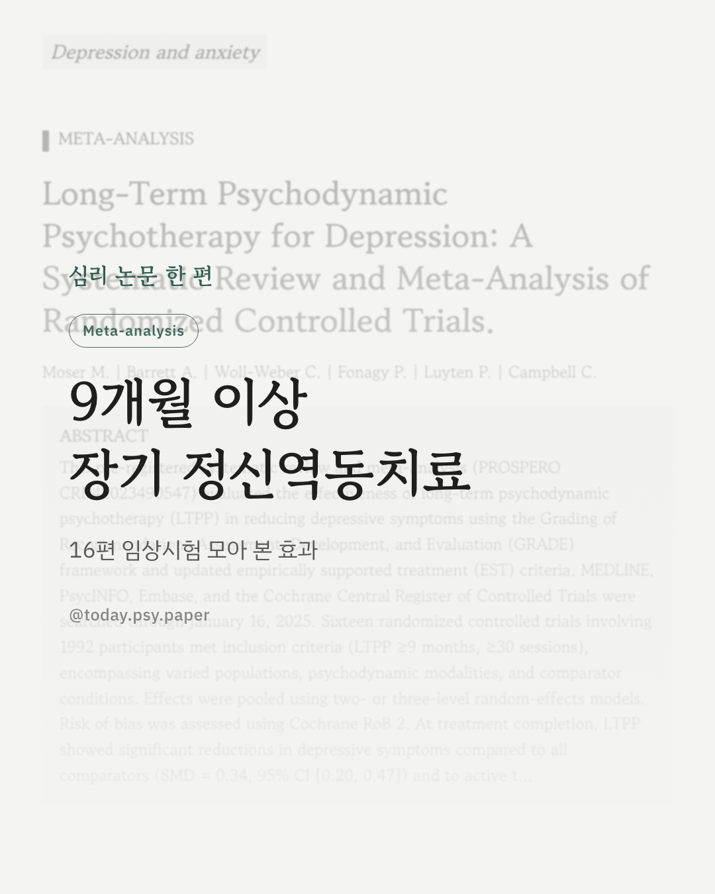
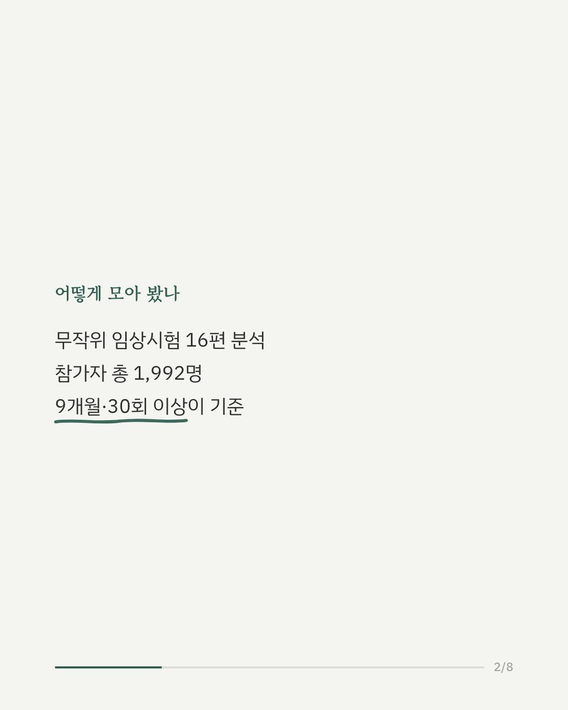
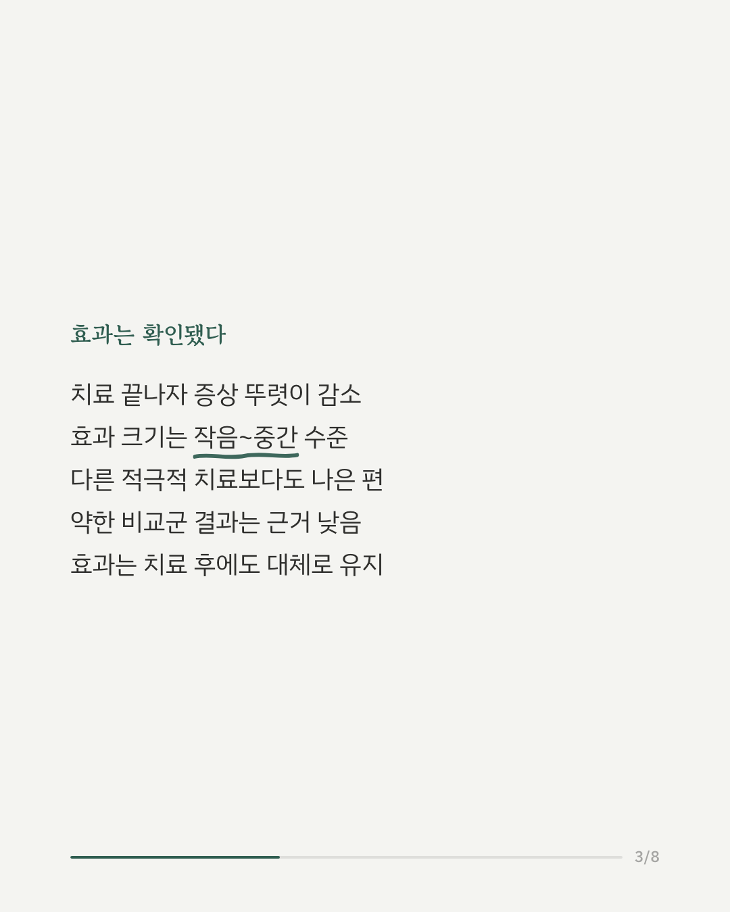
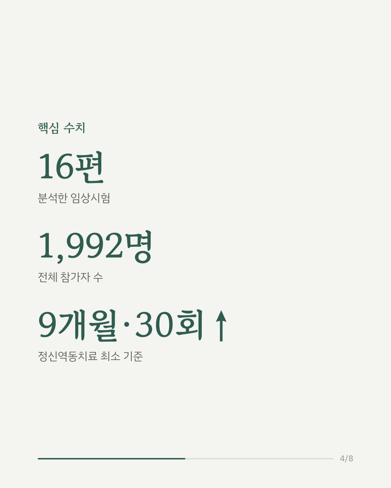
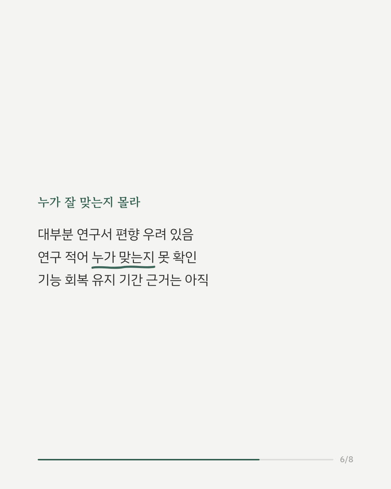
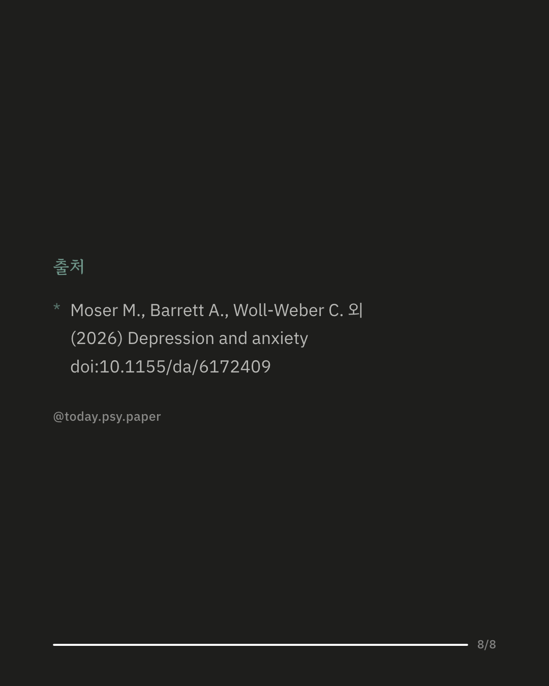

우울증 치료에는 여러 방법이 있지만, 짧은 상담보다 오래 이어가는 심리치료의 효과는 상대적으로 근거가 부족했습니다. 이번 연구는 9개월 이상, 30회기 이상 이어진 '장기 정신역동치료'가 우울 증상을 얼마나 줄이는지 확인하기 위해 무작위 임상시험 16편, 참가자 1,992명의 자료를 모아 메타분석했습니다. 치료가 끝난 시점에서 장기 정신역동치료는 다른 모든 비교 조건 대비 우울 증상을 유의미하게 줄였고, 이 효과는 작음에서 중간 정도 크기였습니다. 인지행동치료 등 다른 적극적인 치료법과 비교했을 때도 더 나은 결과를 보였으며, 효과는 치료가 끝난 뒤에도 대체로 유지됐습니다. 다만 상대적으로 근거가 약한 비교 조건과 비교했을 때 나온 더 큰 효과 수치는, 연구 수가 적고 결과 편차가 커 신뢰도가 낮았습니다. 연구팀은 이 결과가 우울증 치료로 장기 정신역동치료를 권고할 만한 근거가 된다고 평가했습니다. 다만 기능 회복이나 치료 비용 대비 효과, 장기적인 유지 여부에 대한 근거는 아직 부족해 가장 강한 수준의 권고까지는 이르지 못했습니다. 또한 연구 대부분에서 편향 위험이 있었고, 어떤 사람에게 이 치료가 특히 잘 맞는지는 개별 연구 수가 적어 확인하지 못했습니다. 출처: Depression and Anxiety (2026), 'Long-Term Psychodynamic Psychotherapy for Depression: A Systematic Review and Meta-Analysis of Randomized Controlled Trials' #임상심리 #심리치료연구 #우울증정보 #정신역동치료 #논문리뷰 #정신분석 #장기치료 #심리상담
python3 publish.py 42787645